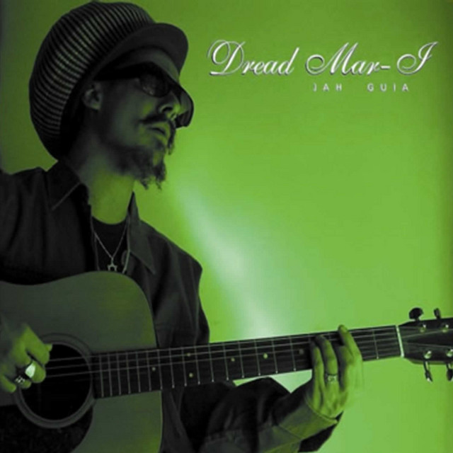

En abril de 2005 editó su primer disco, "Jah guía". Durante ese año Dread Mar I
participó como
miembro estable de Los Cafres, acompañando a la banda de Bonetto en el Estadio Obras y
en el Luna
Park, donde registraron su DVD "Los Cafres - Luna Park". Dread Mar I participó en coros,
y en dos
conciertos por la costa argentina reemplazó al cantante.
